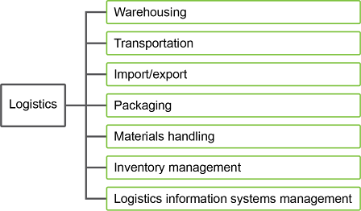
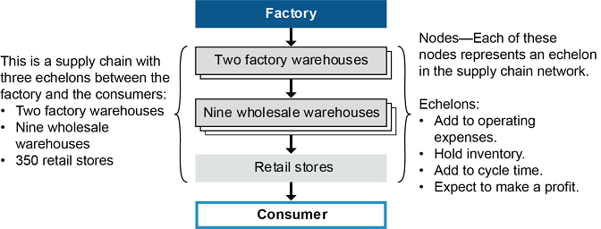

Supplier relationship management (SRM) and supplier segmentation are introduced here, followed by SRM process and technology discussions.
Supplier relationship management and supplier segmentation are introduced next.
📖 ASCM Definition — supplier relationship management (SRM):
Supplier relationship management helps develop and maintain relationships with suppliers to meet the general goals of ensuring mutual profitability while also meeting marketplace needs.
SRM is a methodology to structure and support relationships with suppliers to
Support a customer-centric business that delivers product/service customization and quality in the desired time frame
Continuously improve supply processes.
We should note that SRM applies only to higher levels of buyer-supplier relationships, except in the case of SRM technology enabling easier buy-on-the market transactions. SRM has its true strength in developing deeper relationships with suppliers that have been identified as key partners in the supply chain. These relationships entail a greater sharing of information, greater knowledge of suppliers and their needs, collaboration at certain points, and even integration of business processes.
If we view the supply chain as a series of actions intended to add value to the final product or service (as shown in Exhibit 6-9), supplier relationship management relates to all those upstream activities prior to one's own contact with the product or service. Note that Exhibit 6-9 assumes that the organization using SRM is a manufacturer; a distributor would use SRM to manage manufacturers, who are its suppliers.

Supplier segmentation is a part of a category strategy for suppliers. Segmentation is the process used to create these supplier categories. One traditional way of segmenting suppliers was to focus on those that did a lot of business with the organization. This may have prompted the organization to pursue strategic relationships with those suppliers. However, they might be supplying only commodities or could get a lot of orders due to inertia (e.g., established relationships or design specifications that would require redesigning other subcomponents) rather than because they deserved to have a strategic relationship. A more nuanced method of segmentation than total spend is often called for.
The rationale for segmenting suppliers is based on the importance of the supplier category to the organization. Just as treating all of your customers as if they were the same can lead to poor marketing and selling strategies, treating all suppliers as if they were the same can lead to inefficiencies or poor supply chain responsiveness. The Pareto rule applies to suppliers: 20 percent of the suppliers or so will deliver 80 percent of the value to the organization's objectives or bottom line. The vital few suppliers who deliver significant value need more relationship management than the trivial many.
Supplier segmentation is a key tool to move an organization toward having a responsive supply chain.
Supplier segmentation is a key tool to move an organization toward having a responsive supply chain. While many organizations used to base supplier selection on finding suppliers who could minimize costs, such as by leveraging economies of scale and low wages in one country, today's market is placing significant stress on responsiveness. For example, even when competing on cost, the country with the lowest labor cost may change quickly as the relative level of wealth in countries shifts. The result is that, instead of developing stable sources of lowest-cost, high-volume supply, organizations are faced with sources that may become less competitive sooner than expected. This means that even organizations with low-cost strategies need a certain level of responsiveness. However, since responsiveness has a cost, this becomes a dilemma for cost-competitive models. Here is where supplier segmentation can come to the rescue.
Supplier segmentation increases responsiveness without significantly increasing costs because it helps organizations with complex networks of suppliers manage their risks and responses. Cost and risk analyses can be simplified when suppliers with similar attributes can be analyzed together. Furthermore, a set of suppliers can be developed that can all be selected as a group when strategy needs to shift. For example, complexity may provide a competitive advantage in the early stages of a product's life cycle, but, as a product matures, it may be better to shift to suppliers who can eliminate unnecessary complexity and provide a standardized product.
Supplier segmentation is also ideal for organizations pursuing strategies other than low cost. For example, if quality will be the source of the organization's competitive advantage, suppliers can be segmented based on their ability to provide consistent high quality. Organizations can devise unique methods of segmentation that benefit their industry and business model.
The following are forms of supplier segmentation:
Product or service type. Segmenting suppliers by the general category of goods or services they supply can help when analyzing all suppliers in that category.
Ideal relationship type. Segmenting suppliers by ideal relationship type involves analyzing what a supplier would bring to some form of partnership if one were to be pursued. The analysis might reveal that some suppliers should remain at arm's length while others would make great strategic partners. It could also show where a supplier was in the wrong category. For example, a supplier could be mistakenly considered to be strategic even though your organization is contributing far more than it receives from the relationship.
Supplier capabilities. Segmentation by supplier capabilities will help organizations that compete on a focus (i.e., niche audience) or differentiation (from competitor offerings) basis for their products/services, because here we are segmenting suppliers based their ability to deliver on the key business objectives at the core of these strategies. The complexity and quality examples above are segmenting by supplier capability. Another example is customer service. Suppliers who could impact customer service could be placed in one segment, suppliers who have marginal impact on customer service could be placed in another, and those who are very unlikely to impact customer service could go in a third category. Suppliers in the first category could receive the largest amount of attention. There would be an emphasis on regular communication of problems and customer feedback, an early warning system for shipping delays, and supplier selection criteria based more on quality and responsiveness than on cost. Suppliers in lower tiers would receive less attention and could have selection criteria that kept cost as a primary decision factor. When an organization has several strategic priorities, suppliers could be segmented for each capability separately. Those suppliers ranking high in each list would be preferred suppliers; suppliers who failed to provide the needed capabilities would be identified and replaced.
Customization versus standardization. Some suppliers will specialize in being responsive and able to provide custom solutions, while others will specialize in providing standardized solutions at economies of scale. Grouping suppliers in this way can help organizations when they are shifting strategies. The earlier description of reducing complexity to suit a product's later life cycle stages is one example of how this type of segmentation could be used.
Level of innovation. Some suppliers are better partners than others when working to innovate a product's design. Suppliers who contribute creative input to product designs can be given preferential early involvement in a product design.
Lead times. Grouping suppliers by similar lead times might help organizations when scheduling orders for goods, when tracking supplier performance (it will highlight lead time consistency since they can be tracked against their peers in terms of average lead times), and possibly by allowing certain shipments to be grouped together (if feasible).
Who are the organization's noncustomer/nonsupplier supply chain partners? Answering this question may result in some categories that can be used as segments. For example, these partners may include supply chains that produce complementary goods and services and that could be approached to pursue cross-selling opportunities.
Other stakeholders may not count as supply chain partners but could still benefit from segmentation: regulatory bodies, auditors, the general public, specific communities, interest groups, unions, and so on. Segmentation could help the organization craft communications that are targeted toward the group. Segmenting these stakeholders by relative importance can help the organization decide how much time and money to devote to maintaining each relationship.
Supplier relationship management (SRM) enables any process that requires close, ongoing relationships between buyers and suppliers to succeed. These processes include a long list of supply chain management innovations:
Most of these are addressed elsewhere. Only supplier co-location is discussed more here.
Supplier co-location is a term often used to describe the practice of locating a supplier or multiple suppliers within a single location. Consider the following examples.
Example: An auto manufacturer invites multiple suppliers into a production plant. The suppliers put inventory and staff on site so that each one can perform an operation on vehicles as they move along the production line. In return, the manufacturer provides the suppliers with free space, shelving, office equipment, and telecommunications.
Example: In the airline industry, all alliance partners operate in the terminal of the dominant carrier at an international airport to facilitate partner connections and product offerings. They offer combined check-in, member lounges, and ground services.
When multiple entities are located in one facility or campus, a primary benefit to the organization is highly integrated operations. The benefit to the supplier is that they are on site and become an integral part of the business. In manufacturing applications, there is also the potential for the organization to reduce capital plant requirements, inventories, and lead times.
The relationship between the organization and the supplier shapes the extent of the co-location. Highly integrated supplier co-location is characterized by internally co-located personnel with high levels of team partnering. But there can be less integrated supplier co-location initiatives with physically separated teams. Broadband communications and SRM technologies make long-distance co-location between lead companies and suppliers a viable alternative to on-site co-location. However, suppliers with facilities located near their customers often have greater success.
Supplier co-location also refers to bringing together people or groups in related roles for product and process innovation. Suppliers have been co-located in this manner to generate ideas and design new products. For example, organizations may use SRM to co-locate core team members on a design project to facilitate communication, develop trust, and promote and sustain team ownership for the project. This allows problems to be addressed quickly as they arise in the design, prototyping, and product qualification processes. Such collaboration usually reduces concept-to-customer time.
Co-location initiatives may necessitate licensing agreements, ranging from traditional patent and software licenses to revenue-sharing agreements.
SRM software can streamline connections between purchasers and suppliers and between members of cross-functional teams. It increases the efficiency of processes associated with acquiring goods and services, managing inventory, and processing materials. SRM technology can lead to lower production costs and a higher-quality and more profitable end product.
There are many reasons why companies that have seen the power of SRM technology are eager to spend the money necessary to get started. One is that transaction costs have decreased. In addition, SRM software tends to work well with most existing enterprise resources planning (ERP) systems and actually helps those systems to achieve their full, promised potential. SRM may even be a fully integrated ERP module.
Companies using SRM software can improve the sourcing process. The software helps reduce the cycle time on sourcing projects. Instead of going through reams of RFPs and comparing a wide array of quotes, the software brings all of these data together for simplified presentation, analysis, and selection. Another way that SRM software reduces sourcing periods is that projects can be saved and then reposted. If the organization has frequently recurring needs, this can save a great deal of time.
Most organizations have no clear idea of why they choose their suppliers, but the software makes selection criteria more readily apparent.
SRM software can help standardize purchasing decisions. Most organizations have no clear idea of why they choose their suppliers, but the software makes selection criteria more readily apparent. Prices and total cost of ownership (TCO) or individual line item costs can be compared quickly so that TCO can be managed systematically, including tracking the past performance of suppliers so that poor performers (e.g., too much scrap) aren't reselected. It can also enforce centrally made strategic sourcing decisions among decentralized buyers for consolidated purchasing, shipping, and quantity discounts.
Persons actively involved in purchasing for major organizations have commented on the structure SRM software also brings to the ongoing supplier management process. After all, instead of their having to deal with hundreds of separate suppliers alone, the software does most of the organizing work for them.
SRM technology also makes communication between the buyer and the seller faster. Since the transfer of information can be done in real time, the supplier can check the buyer's inventory to determine whether new shipments are needed and the buyer can instantly submit orders over the internet without reducing overall productivity. Similarly, questions related to orders can be answered, perhaps by checking an extranet web page, so no human interaction or human-related delays have to interfere with the work.
SRM system components may include both transactional and analytic systems:
Procurement of goods and services through internet trade exchanges or auctions
Purchasing and supplier scheduling using direct system links over the internet or electronic data interchange (EDI) or using portals
The internet is integral to SRM, so the following content looks at web-enabled SRM (which could include cloud-based SRM systems).
Exhibit 6-10 highlights web-enabled SRM, which includes internal interfaces, external supplier interfaces, and SRM analytics, services, and procurement.

Internal interfaces could refer to an ERP system and its data warehouse. They collect and provide a repository for internal information in order to guide the purchasing processes. ERP or other internal interfaces provide SRM systems with a wealth of information, including the following examples:
Operations synchronization. Purchasing receives consolidated demand information from manufacturing planning systems and/or advanced planning systems to synchronize the replenishment requirements of individual plants, subsidiaries, and supply chain partners. Availability of parts, etc., is provided to such systems. Purchasing is similarly synchronized with other departments such as quality management, marketing and sales, inventory planning, and transportation.
Accounting. Accounting feeds directly into the organization's financial system for order and price matching, invoice entry and payables, credit management, early payment discounts, cost variance, and financial reconciliation.
Purchasing planning. Future purchasing is scheduled against anticipated demand and is available to partners on a planning calendar.
Supplier performance measurement. Once the data history is compiled, organizations can generate specific reports and performance measurements using this function. This will enable them to determine the value of their supplier relationships and the degree of success of their continuous improvement initiatives.
Supplier database. The system contains a data warehouse of all past and present suppliers as well as those who submitted RFPs/ITTs. There are usually subsets for approved or preferred suppliers. Supplier contracts are retained for reference.
External supplier interfaces automate transactional interactions with existing suppliers using internet or EDI links. These interfaces may be direct links between each party's ERP systems, in which case the status of individual orders or logistics information is kept up to date in each system. The secure links allow for a full range of transactions between buyer and supplier, including requisitioning, purchase order generation and tracking, logistics, receiving goods, and paying suppliers. Suppliers can also post transactions, such as approving the buyer for trade credit financing, issuing invoices, or issuing credits for defective products. External supplier interfaces include secure portals for use with SRM services such as messaging boards or collaborative product design. Portals can also be used to link with suppliers who do not have direct transaction system links (e.g., checking order status).
Analytical technology allows the purchasing and supply chain management group to solve issues related to the management of materials, information, and finances in the supply chain through the following functions:
This analysis finds the purchasing, financing, and delivery processes or activities that are value-added and seeks to eliminate what is non-value-added. For example, the analysis could recommend substitution strategies rather than paying expediting charges for a particular material, or it could recommend substituting a less expensive good or service when the price for quality received is too high.
Performance analysis.
Using the analytical approach enables the organization to measure its procurement performance in terms of cost savings, quality, delivery, price, and overall effectiveness. The analysis can monitor entire procurement programs, individual suppliers, and contract effectiveness.
Let's take a look at an example using the analytical SRM approach.
A manufacturer of electrical distribution systems and components with more than 70,000 employees in 130 countries lacks a global view of purchasing. It also lacks the analytical capability to amend purchases and verify that supplier policies are being followed. To solve these problems and reduce costs, they implement an analytical SRM system. The technology provides them with a comprehensive, global view of purchasing, which allows SRM managers to focus on strategic procurement practice. They can also drill down into specific exceptions to rules so that they can amend proposed purchases prior to their final approval.
SRM services allow organizations to initiate strategic sourcing searches or other supplier searches that go beyond arm's length transactions. Some SRM systems may search the same sites for strategic sourcing and for SRM procurement, while others provide additional services for strategic sourcing. Value-added services may include more detailed search and analysis, comparison of RFQs or ITTs, contract negotiation tools and forms, online financial and billing services, comparison shopping functions, and transportation and logistics support to facilitate product fulfillment.
SRM services may also include supplier development, collaborative design, and collaborative planning. Supplier development provides tools to help set up collaborative efforts, begin sharing data, and settle on pricing strategies. Collaborative design tools allow organizations to collaborate in real time on design drawings and specifications; collaborative planning tools help orchestrate logistics.
SRM services may provide member services, security, and workflow tools. Member services create personalized websites or portals for partners in the same way that CRM systems can create personalized pages for customers. Security is of great concern for organizations implementing and using online market transactions. The main goal of security is to protect individual files so that confidential information cannot be accessed without validation. Workflow tools process information in the background to ensure that all dependencies between procurement process steps occur correctly.
The goal of SRM procurement applications is to streamline procurement of the goods and services necessary to produce products and run the organization. SRM procurement provides interfaces to online trade exchanges or auctions as well as additional features for transactional purchasing—such as shopping tools, special pricing, payment processing, order status and tracking, and after-sale support. Online technologies have made it possible to use B2B (business-to-business) service functions such as product search, supplier search, and custom searches by content (e.g., product description or type) or parameter (e.g., how the content is organized). Product catalog management involves managing suppliers' product catalogs online to ensure that they have current prices, inventory levels, and product specifications.